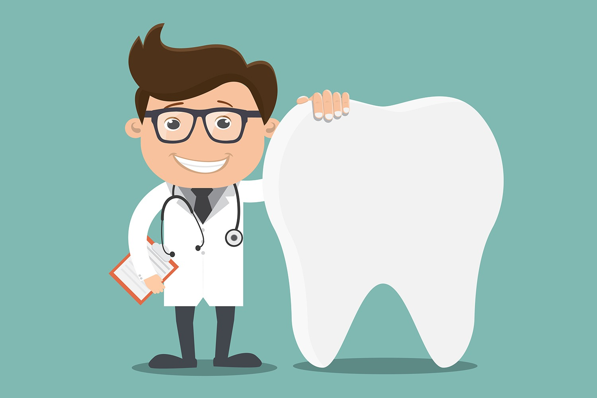
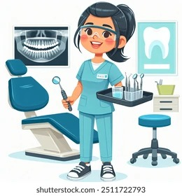
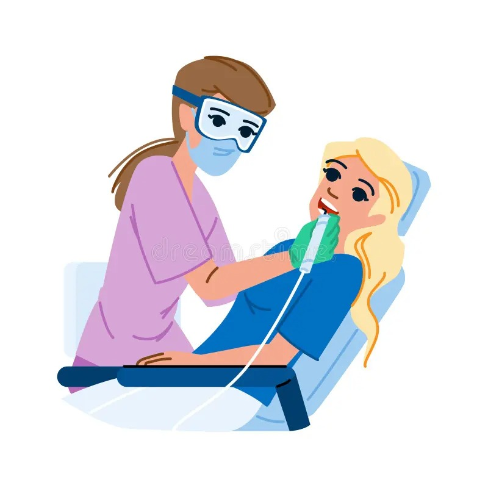

Who works in the field of dentistry?
Dentists are healthcare professionals who diagnose and treat issues related to teeth, gums, and other parts of the mouth. Dental hygienists focus on preventive dental care, often performing cleanings and educating patients on oral health. Dental assistants help dentists during procedures, manage patient records, and handle various clinical tasks.
Dentists are healthcare professionals who diagnose and treat issues related to teeth, gums, and other parts of the mouth. They perform various procedures, including fillings, extractions, and root canals, to maintain or restore oral health. Dentists also play a key role in educating patients on proper dental hygiene and preventive care to avoid future problems.
Dental hygienists focus on preventive dental care, often performing cleanings and educating patients on oral health. They use specialized tools to remove plaque and tartar buildup, reducing the risk of cavities and gum disease. Hygienists also advise patients on techniques to improve their oral hygiene, such as proper brushing and flossing methods.
Dental assistants help dentists during procedures, manage patient records, and handle various clinical tasks. They prepare examination rooms, sterilize instruments, and ensure that the dentist has everything needed for patient care. Dental assistants also interact with patients, making them comfortable and providing aftercare instructions following dental treatments.
Visit us at:
Company Zahraa
Karaportti 2, 02340 ESPOO, Finland
Email: zharaa.khadhem@metropolia.fi
Phone: +358 40 123 1233